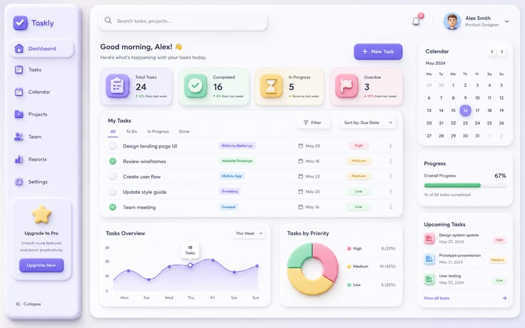

Project Name
One sentence: what is it and who is it for?

1Overview
What was the project and what was your part? Keep it to 2-3 lines.
2Problem
What problem do users have? Example: "Staff track attendance on paper, so late arrivals are hard to count."
3Goals
- Goal 1
- Goal 2
- Goal 3
4Research
Who are the users? What did you learn (talking to people, looking at similar apps)? 3 short bullet points is enough.
5Wireframes & ideas
Show your early sketches or low-fidelity frames and explain one decision you made.
6Final UI
Show 2-4 final screens. Mention colours, fonts and why you chose them.

7Prototype
Figma file: Share > set to "Anyone with the link can view", then paste the link below.
Open Figma prototype ↗8Result & what I learned
What did you finish? What would you improve next time? Be honest: only write results you really have.